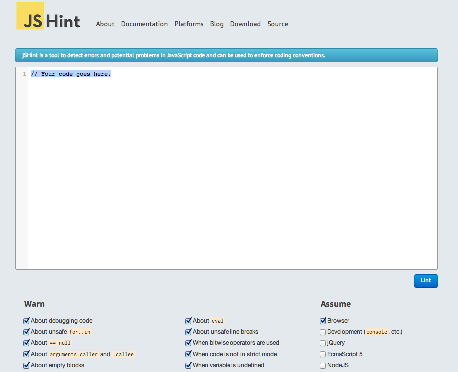

Javascript
Revisited
Anup Bishnoi
anup.bishnoi@nagarro.com

JavaScript: The Good Parts

Brendan Eich
CTO, Mozilla Corporation
Created JavaScript in 10 days.
Agenda
- Basics
- Advanced Concepts
- JSHint
- JSON
- Developer Resources
Basics
Rapid History
- Created in 1995 by Brendan Eich for Netscape
- Formal spec name: ECMAScript
- ES3 supported across all browsers
- ES4 was a mess, never got implemented
- ES5 is the latest edition, all modern browsers
Use Strict Pragma
(function () {
"use strict";
// CODE
}());
ECMAScript 5 Strict Mode
Death to bugs
(function () {
"use strict";
var obj = {
key: "value",
anotherKey: "another value",
keyKey: "value value",
key: "one more value"
};
}());
Duplicate key not allowed in object.
Best Practice
globalVar = "global value";
(function () {
"use strict";
log(window.globalVar);
str = "global";
}());
Unintended global namespace pollution
not allowed.
Variables
(function () {
"use strict";
var undef,
num = 10,
str = "string",
bool = false,
obj = { property: "value" },
func = function () {},
nothing = null,
camelCasedVar = "convention";
log(undef);
}());
Default value for unassigned variable is undefined.
Scope
(function () {
"use strict";
var outer = "outer value";
function func() {
var inner = "inner value";
log(outer);
log(inner);
}
func();
log(outer);
log(inner);
}());
Variable scope is simply the function scope,
not block scope.
Function Hoisting
(function () {
"use strict";
var func1,
func2 = function () { return "function 2"; };
log(func1);
log(func2());
log(func3());
func1 = function () { return "function 1"; };
log(func1());
function func3() { return "function 3"; }
}());
Function declarations get hoisted,
at the top of scope.
Types
(function () {
"use strict";
var num = 10,
str = "string",
obj = { property: "value" },
func = function () {},
nothing = null;
num = str;
log(num);
str = obj;
log(str);
obj = func = nothing;
log(obj);
log(func);
}());
Types can be changed at runtime.
Type Determination
(function () {
"use strict";
log(typeof "string");
log(typeof false);
log(typeof undefined);
log(typeof function () {});
log(typeof 245);
log(typeof 2.7);
log(typeof {k: "v"});
log(typeof [1, 2]);
log(typeof (/regExp/i));
log(typeof new Date());
log(typeof null);
}());
Better to use a library for this.
Type Conversion
(function () {
"use strict";
var num = 10,
str = "20",
floating = "24.9";
log(num.toString());
log(String(num));
log("" + num);
log(Number(str));
log(parseInt(str, 10));
log(parseFloat(floating));
log(+str);
log(+floating);
}());
Multiple ways to do it.
Prefer String(10) and +"10".
Wrong Equality Checking
(function () {
"use strict";
log("" == []);
log(0 == []);
log("1" == [1]);
log("" == 0);
log(0 == " ");
log("" == " ");
log(24 == "twenty four");
log(24 == "24");
log(null == undefined);
}());
Never use ==, or !=.
Correct Equality Checking
(function () {
"use strict";
log("" === []);
log(0 === []);
log("1" === [1]);
log("" === 0);
log(0 === " ");
log("" === " ");
log(24 === "twenty four");
log(24 === "24");
log(null === undefined);
}());
Always use ===, or !==.
Object Creation
(function () {
"use strict";
var o1 = {
property: "o1 property"
};
log(o1.property);
// or
var o2 = {};
o2.property = "o2 property";
log(o2.property);
// or
function ClassName() {
this.property = "o3 property";
}
var o3 = new ClassName();
log(o3.property);
}());
Don't use these words as property names:
constructor,
hasOwnProperty,
reserved words, etc.
Object Property Access
(function () {
"use strict";
var obj = { property: "value" };
log(obj.property);
log(obj["property"]);
// New object properties can be created
obj.anotherProp = 56;
log(obj.anotherProp);
}());
Dot notation access is slightly faster.
Prototype Chain
(function () {
"use strict";
var obj = { property: "value" };
function MyClass() {
this.ownProperty = "something";
}
MyClass.prototype = obj;
var newObj = new MyClass();
var prop;
for (prop in newObj) {
log(prop);
log(newObj[prop]);
}
log(newObj.toString());
}());
Walking the prototype chain,
upto Object.prototype.
Better Enumeration
(function () {
"use strict";
var obj = { property: "value" };
// Constructor for MyClass
function MyClass() {
this.ownProperty = "something";
}
MyClass.prototype = obj;
var newObj = new MyClass();
for (var prop in newObj) {
if (newObj.hasOwnProperty(prop)) {
log(prop);
log(newObj[prop]);
}
}
}());
Unless newObj.hasOwnProperty
has been overridden.
:-\
Inheritance
(function () {
"use strict";
function BaseClass() {
this.property = "value";
}
function InheritedClass() {
this.ownProperty = "own value";
}
InheritedClass.prototype = new BaseClass();
var obj = new InheritedClass();
log(obj.ownProperty);
log(obj.property);
}());
Setting up the prototype chain.
Arrays
(function () {
"use strict";
var arr = [1, 2, 3, 4];
log(arr.length);
arr.push(5); log(arr);
arr.pop(); log(arr);
arr.unshift(0); log(arr);
arr.shift(); log(arr);
arr.splice(1, 2); log(arr);
arr.splice(1, 0, 20, 25, 30); log(arr);
log(arr.concat([5]));
log(arr.concat(5));
}());
splice alters the array,
concat returns a new array.
Dynamic Typing
(function () {
"use strict";
var arr = ["one", 2, [1, 2, 3]];
log(arr);
log(arr[2][2]);
// another way to `push`
arr[arr.length] = function () { return 100; };
log(arr[3].toString());
log(arr[3]());
// Out of bounds
log(arr[-1]);
log(arr[100]);
}());
Accessing non-existent indices
returns undefined,
just as in objects.
Arrays are Objects
(function () {
"use strict";
var arr = [0, 1, 2],
obj = {
0: 0,
1: 1,
2: 2
};
log(arr[1]);
log(obj[1]);
arr.property = "value";
log(arr.property);
// Since object keys can only be strings
log(arr["1"]);
}());
arr.length is simply
(largest numeric key in array) + 1
Looping
(function () {
"use strict";
var arr = ["zero", "one"];
log("Using regular for loop");
for (var i = 0; i < arr.length ; i++) {
log(i);
log(arr[i]);
}
log("Using Array#forEach");
// native in ES5 (needs a library in ES3)
arr.forEach(function (value, index) {
log(index);
log(value);
});
}());
Don't use for...in
to loop over an array.
&& and ||
(function () {
"use strict";
var obj = {
func: function () { return 99; }
};
// Guard Operator
log(obj && obj.func && obj.func());
// Default Operator
obj.property = obj.property || obj.func();
log(obj.property);
}());
Guard against calling non-functions as functions.
Assign default values to parameters.
Exception Handling
(function () {
"use strict";
var obj = {};
try {
log(1/0);
obj.nonExistentFunc();
} catch (e) {
log("error caught, no harm done.");
log(e.toString());
log(e.name + ": " + e.message);
}
"here".is.an = "uncaught error";
}());
Web pages become unreliable
after an uncaught error
Throw your own errors
(function () {
"use strict";
try {
throw new Error("My custom error");
} catch (e) {
log(e.toString());
try {
throw new TypeError("Why U Mix Types");
} catch (err) {
log(err.toString());
}
}
}());
Nested try...catch
Throw anything
(function () {
"use strict";
var anything = {
code: 201,
name: "SomeErrorClass",
message: "Just got thrown",
toString: function () {
return "[ " + this.name + ": " + this.message + " ]";
}
};
throw anything;
}());
Create new custom error types
Debugger
(function () {
"use strict";
var a = 10;
debugger;
var doubleValue = function (num) {
var result = num * 2;
return result;
};
log(doubleValue(a));
}());
Delayed callback
(function () {
"use strict";
alert("legen... wait for it...");
setTimeout(function () {
alert("...dary");
}, 4000);
}());
Timing can't be exact to the millisecond
because of the way javascript event loop works.
Specify arguments
(function () {
"use strict";
alert("legen... wait for it...");
setTimeout(function (remaining) {
alert("..." + remaining);
}, 4000, "dary");
}());
Cancel Timeout
(function () {
"use strict";
var id = setTimeout(function () {
alert("ran successfully");
}, 4000);
clearTimeout(id);
}());
id is just an auto-incrementing integer
to identify the callback
Recurring callback
(function () {
"use strict";
var id = setInterval(function (value) {
alert(value);
}, 2000, "knock knock");
setTimeout(function () {
clearInterval(id);
}, 10000);
}());
Both setTimeout and setInterval won't work
if js is stuck in an infinite loop
Advanced Concepts
Or just, Functions
First-class variables
(function () {
"use strict";
function shout() {
log("Function ran!");
}
function callFunction(f) {
f();
}
callFunction(shout);
}());
Functions can be passed as parameters to
and returned as result from other functions
IIFE
(function () {
"use strict";
(function () {
(function () {
log("getting logged");
}());
}());
}());
Immediately Invoked Function Expression
Functions' return value
(function () {
"use strict";
function func1() {
log("function 1 called");
return "return value";
}
function func2() {
log("function 2 called");
}
log(func1());
log(func2());
}());
All functions return a value (undefined by default)
Constructors return the created object
Closures
(function () {
"use strict";
function adder(howMany) {
return function (num) {
return howMany + num;
};
};
var twoPlus = adder(2);
log(twoPlus(9));
}());
All functions create a new scope,
"closing over" the variables used inside.
Here, twoPlus closes over
howMany
Module Pattern
(function () {
"use strict";
var lady;
lady = { age: 20 };
lady.age = 40;
log(lady.age);
lady = (function () {
// private variable `age`.
var age = 20;
return {
getAge: function () { return age; }
};
}());
log(lady.age);
log(lady.getAge());
}());
You can't set the lady's
age from outside
its closure in any way in the second case.
Functions are Objects!
(function () {
"use strict";
var func1 = function () {};
func1.someValue = "some value";
log(func1.someValue);
function func2() {
log("function 2 ran");
func2.someProperty = "some property";
}
log(func2.someProperty);
func2();
log(func2.someProperty);
}());
Don't fight it, embrace it.
What does `this` mean?
window.someProperty = "some property";
function funcOutside() {
log(this.someProperty);
}
(function () {
"use strict";
function funcInStrictMode() {
log(this.someProperty);
}
funcOutside();
funcInStrictMode();
}());
Without strict mode, function call has
this set to
window.
But in Strict Mode, this is
undefined.
Inside A Constructor
(function () {
"use strict";
function MyClass() {
this.property = "value";
}
var obj = new MyClass();
log(obj.property);
}());
In a constructor, this is the object being created.
In a method call
(function () {
"use strict";
var obj = {
property: "value",
func: function () {
log(this.property);
}
};
obj.func();
}());
In a function called as method on an object,
this is the object itself.
(function () {
"use strict";
function logWhich() {
log(this.which);
}
var obj1 = {
which: "object 1",
func: logWhich
};
var obj2 = {
which: "object 2",
func: logWhich
};
obj1.func();
obj2.func();
}());
Whoever calls the function as its method,
becomes the context (this)
for the function
Setting the context
(function () {
"use strict";
function func() {
log(this.property);
}
func.call({ property: "value" });
}());
Function.prototype.call
provides this to every function
Call with arguments
(function () {
"use strict";
function func(arg1, arg2) {
log(this.property);
log(arg1);
log(arg2);
}
func.call({ property: "value" }, 10, "20");
}());
Default value for arguments is undefined
Applying arguments
(function () {
"use strict";
function func(arg1, arg2) {
log(this.property);
log(arg1);
log(arg2);
}
func.apply({ property: "value" }, [10, "20"]);
}());
Allows sending in an array as arguments
Function Arguments
(function () {
"use strict";
function func() {
log(this);
for (var i = 0; i < arguments.length; i++) {
log(arguments[i]);
}
}
func.call("context", "argument 1", "argument 2");
}());
arguments is array-like,
but not an instance of Array
Wrapping a function
(function () {
"use strict";
function wrap(f) {
return function () {
log("wrapped function being run");
return f.apply(this, arguments);
};
}
function square(arg) {
return arg * arg;
}
var wrappedSquare = wrap(square);
log(wrappedSquare(5));
}());
The wrapped function won't know the difference
Bound function context
(function () {
"use strict";
function func() {
log(this);
}
var bound = func.bind({ property: "value" });
func();
bound();
}());
bound can never
have its context changed now
Bound with arguments
(function () {
"use strict";
function func(arg1, arg2) {
log(this);
log(arg1);
log(arg2);
}
var bound = func.bind("bound context", "argument 1");
bound("argument 2");
}());
Newly passed arguments add up
Semicolons are optional
(function () {
[1, 2, 3].forEach(function (value) {
log(value)
})
var a = 10
}())
Optional, except for some confusing cases.
Optional with problems
(function () {
var a = 10
[1, 2, 3].forEach(function (value) {
log(value)
})
}())
So just use them always.
Seriously.
JSHint
Based on, but broader than, JSLint
JSHint
Never ever code without a linter.
Linting kills bugs before they are born.
JSON
Created by Douglas Crockford
JSON
{
"key": "in double quotes",
"object": {
"nested": 1,
"functions": "not allowed",
"canPassThemAs": "function () {}"
},
"array": ["is", "the", { "same": "as before" }],
"null": null,
"undefined": "not allowed"
}
JavaScript Object Notation
Simply a subset of JS objects, with
keys specified as double-quoted strings
Developer Resources
Developer Resources
-
Mozilla Developer Network
Prefix google queries with "mdn":
- "mdn Object.create"
- "mdn -webkit-transition"
- "mdn array length"
- "mdn css float"
- HTML5 Rocks
- Web Platform Docs
DO NOT GO TO W3SCHOOLS
Check out W3Fools